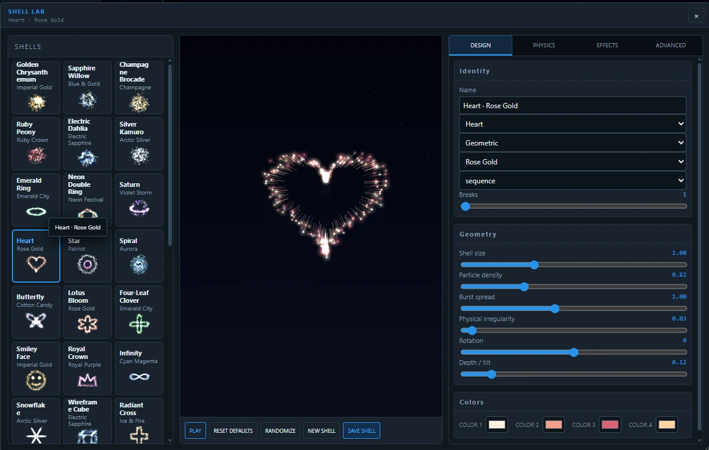
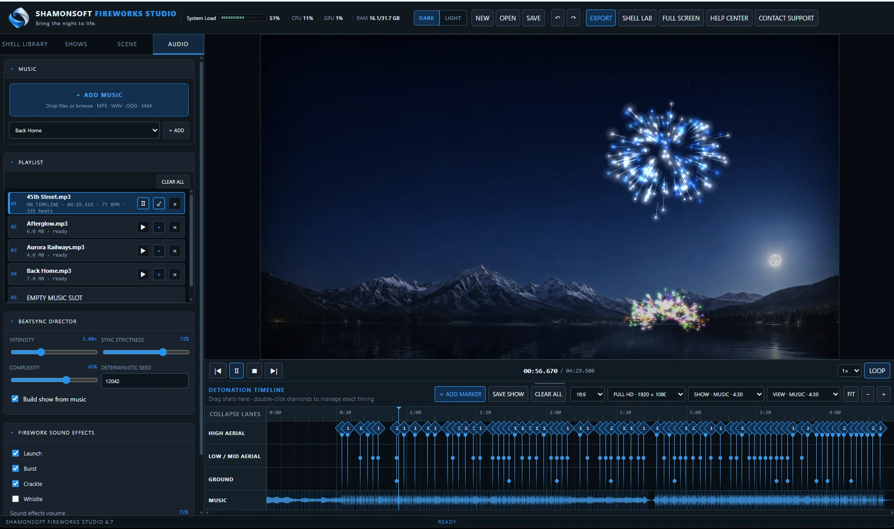
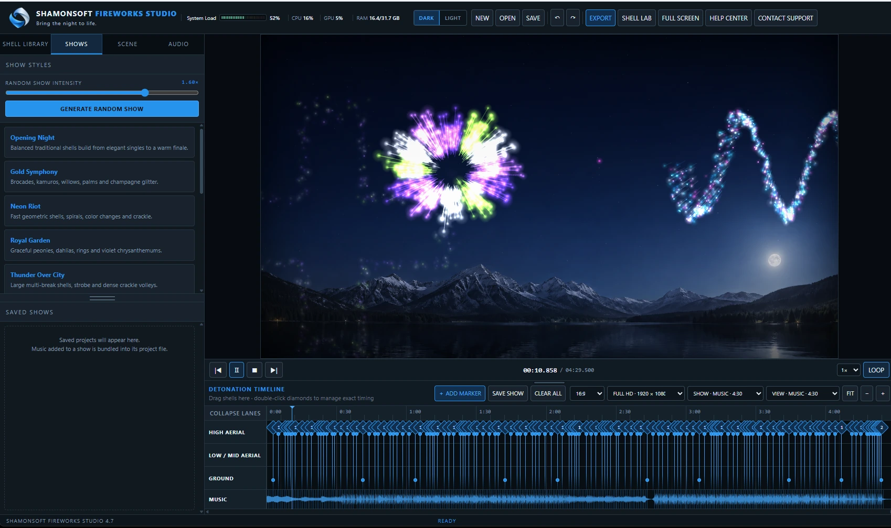
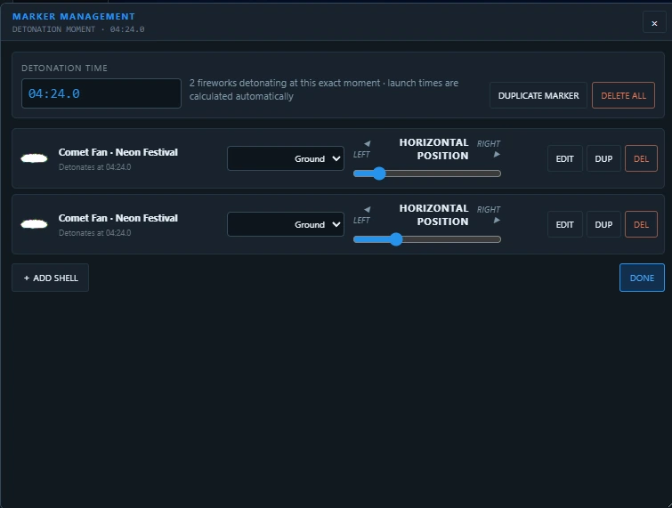

Build complete fireworks shows around your soundtrack.
Fireworks Studio gives you the tools to design, time and refine full fireworks displays with precise control over shells, effects, colors and launch positions. Sync the show to music or audio, use existing shells, or create your own from the ground up in Shell Lab.
Start with 62 built in shells. Preview a shell, edit it in Shell Lab, or add it directly to the timeline.

Build fireworks from the inside out.
Shell Lab is a full editor for creating and refining custom fireworks. Start with an existing shell or create a new one, then shape its geometry, colors, particle behavior, physics, effects and advanced properties while previewing the result as you work.

Build a fireworks show around the beat.
Load your music or audio, then use BeatSync to automatically place fireworks along the timeline based on the beat of the track. From there, adjust intensity, complexity and synchronization, then fine tune individual bursts and timing by hand.

Start with a full show or build your own.
Choose from built in show styles, create a complete show from scratch, or generate a random show and use it as a starting point. Adjust the result, replace shells, change timing and keep refining until the show looks the way you want.

Control exactly what happens and when.
Timeline markers represent precise moments in the show. Open any marker to add or remove shells, combine multiple fireworks at the same moment, choose their position in the scene and fine tune the detonation time. Fireworks Studio automatically calculates the corresponding launch timing so you can concentrate on how the show is choreographed.